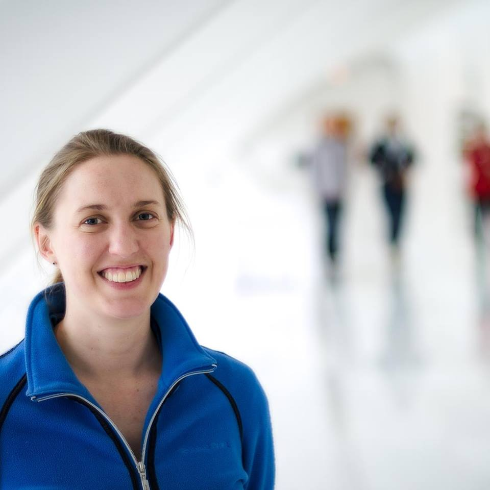

About
 I am currently a research associate at the department of Speech, Hearing and Phonetic Sciences at UCL, where I also obtained my PhD. Prior to this I did a postdoc at the Hearing Aid Lab at Northwestern University.
My research primarily focuses on the question why older adults, with and without hearing loss, experience increased difficulties understanding speech in noise. I am particularly interested in the potential effects of cochlear neuropathy, or 'hidden hearing loss', on speech in noise perception. In addition, I have looked at individual differences in hearing aid outcomes using different signal processing strategies.
In addition to science, I absolutely love statistics and programming. When I am not working, I am either travelling the world, or planning a trip. I also play the viola and co-founded the Chicago Late Starters Orchestra in 2015.
Have a look at my CV for more info. You can also find me at Google Scholar and LinkedIn , and GitHub.
Photography by Sriram Boothalingam